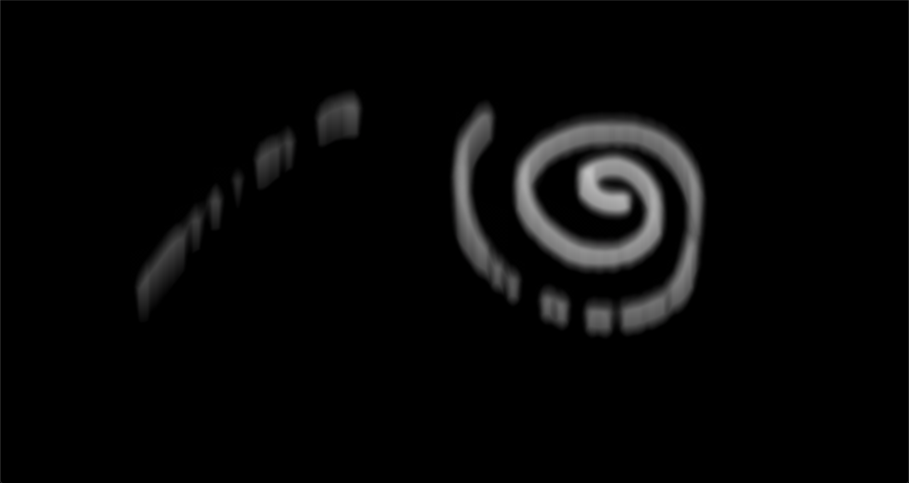

We have the majority of our shader framework, which is written in Three.js, completed. By following an online smoke shader tutorial and referencing Nvidia's Fast Fluid Dynamics Simulation paper, we have set up the framework and have also written a couple of different shaders, including: advection, buoyancy, divergence, Jacobi iteration, and the subtract gradient shader for projection for solving the Navier-Stokes equations.
We keep pressure and velocity grids to track
the movement of each particle in our simulation. It also contains two scalar values,
temperature and density. Temperature affects the
buoyancy of the smoke, while density refers to the density of the smoke
when a user clicks on the screen to create a smoke source. The general pipeline is as follows:
velocity = externalForces(diffuse(advection(velocity)));
pressure = computePressure(velocity);
velocity = subtractPressureGradient(velocity, pressure);
The basic structure of our shader material is as follows:
material = new THREE.ShaderMaterial( {
uniforms: {
res: {type: 'v2', value: new THREE.Vector2(width, height)},
},
fragmentShader: window.shaders.shader
})
plane = new THREE.PlaneBufferGeometry(window.innerWidth, window.innerHeight);
object = new THREE.Mesh(plane, material);
scene = new THREE.Scene();
scene.add(object);
The uniforms are passed into the custom shader through this material object. We define the shaders in a separate Javascript file for clarity.
Lastly, we call a render function to use these shaders. We ensure that we are using a buffer texture in order to save intermediate results before passing it on to the next step in our shader pipeline.
|

|
Compared to the timeline we presented in our final project report, we are on track. We planned to finish our shaders by Week 3. We have the implementations for the ones mentioned above finished, but have not yet integrated them together. This will be our main focus in the next week. Now that we have more clarity with regards to the different parts of this project and what we have to accomplish, we will revise our plan to be more detailed.